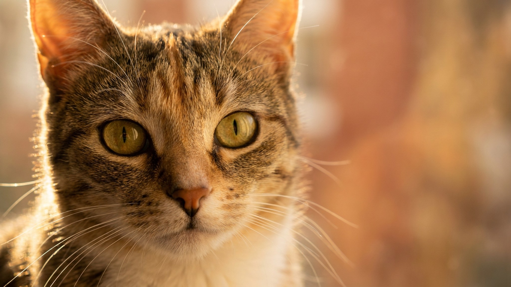

Новый знакомый смотрит на вашу кошку и спрашивает: «Это что, дикая?» И вопрос понятен. Уссурийская кошка выглядит в точности как амурский лесной кот: тикированный окрас с тёмными полосами, мощный корпус, немигающий охотничий взгляд. За этой внешностью скрывается сбалансированный характер домашней кошки, которой нужны активность и уважение к личному пространству. Разбираем породу по делу: что за характер, как ухаживать и что проверить перед покупкой котёнка.
🐾 Всё о вашем питомце — в одном приложении
AI-ветеринар, дневник здоровья, напоминания об уходе и прививках. Бесплатно, в Telegram и MAX.
Установить AnimaLife → Открыть в MAX →
У вас iPhone? AnimaLife есть в App Store
Уссурийская кошка входит в число самых редких российских пород. Формально её признал Совет WCF в начале 2000-х, а сложилась она в Приморском и Хабаровском краях, где домашние кошки веками контактировали с дальневосточным лесным котом. Получилась крепкая, плотная кошка весом 4–7 кг с тикированным полосатым окрасом: от охристо-коричневого до серебристо-серого с тёмными отметинами по хребту и лапам. Племенное разведение ведут единичные питомники, и это важно учитывать при выборе котёнка.
Уссурийская кошка не «диванная», но и не дикарь. Характер у неё уравновешенный, с выраженным охотничьим инстинктом и острой наблюдательностью.
Короткая плотная шерсть уссурийской кошки проста в уходе: достаточно вычёсывания раз в неделю, в сезон линьки чаще. Купать нужно редко и только при необходимости.
Главный приоритет в уходе: активность и пространство. Кошке нужны когтеточки, высокие полки, игрушки типа «охота» (удочки, мышки). Без достаточной нагрузки она начинает скучать и портить мебель. Плановые визиты к ветеринару раз в год, вакцинация и обработка от паразитов по графику закрывают базовые потребности по здоровью. Кормление: полнорационный корм или натуральный рацион с хорошим содержанием белка, порода мышечная.
Редкость породы создаёт риск: под видом уссурийских кошек нередко продают обычных тигровых беспородных котят. Вот ключевые проверки:
Материал носит информационный характер и не заменяет очную консультацию ветеринара.
🐾 Спросите AI-ветеринара о вашей кошки
AnimaLife отвечает на вопросы о кошках и собаках круглосуточно, ведёт дневник здоровья и напоминает о прививках. Бесплатно, без записи.
Открыть AnimaLife → Открыть в MAX →
У вас iPhone? AnimaLife есть в App Store
🐾 Понравился разбор?
Подпишитесь на канал — каждый день разбираем по одному тревожному симптому у кошек и собак: что в пределах нормы, а когда пора к врачу. Подпишитесь, чтобы не пропустить разбор, который может спасти здоровье вашего питомца.